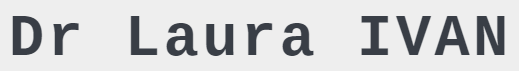

<mat-sidenav-container class="sidenav-container">

  <mat-sidenav #drawer
    class="sidenav bg-light"
    fixedInViewport="false"
    [attr.role]="(isHandset$ | async) ? 'dialog' : 'navigation'"
    [mode]="(isHandset$ | async) ? 'over' : 'side'">
    <mat-toolbar>Menu</mat-toolbar>
    <mat-nav-list>
      <a mat-list-item routerLink='/accueil'>{{ 'toolbar.option1' | translate }}</a>
      <a mat-list-item routerLink='/services'>{{ 'toolbar.option2' | translate }}</a>
      <a mat-list-item routerLink='/contact'>{{ 'toolbar.option3' | translate }}</a>

      <button class='btn flag french' (click)="useLanguage('fr')"></button>
      <button class='btn flag english' (click)="useLanguage('en')"></button>
      <button class='btn flag romanian' (click)="useLanguage('ro')"></button>
    </mat-nav-list>
  </mat-sidenav>

  <mat-sidenav-content>
    <div class="container-fluid toolbarWideDiv">
      <mat-toolbar class='container toolbar' color="primary">
        <button
          type="button"
          aria-label="Toggle sidenav"
          mat-icon-button
          (click)="drawer.toggle()"
          *ngIf="isHandset$ | async">
          <mat-icon aria-label="Side nav toggle icon">menu</mat-icon>
        </button>
        

        <span class='spacer'></span>
        <div class="hiddenMobileScreen">
          <a routerLink='/accueil'>{{ 'toolbar.option1' | translate }}</a>
          <a routerLink='/services'>{{ 'toolbar.option2' | translate }}</a>
          <a routerLink='/contact'>{{ 'toolbar.option3' | translate }}</a>

          <button class='btn flag french mr-1' (click)="useLanguage('fr')"></button>
          <button class='btn flag english' (click)="useLanguage('en')"></button>
          <button class='btn flag romanian ml-1' (click)="useLanguage('ro')"></button>
        </div>

      </mat-toolbar>
    </div>

    <ng-content></ng-content>

  </mat-sidenav-content>
</mat-sidenav-container>
